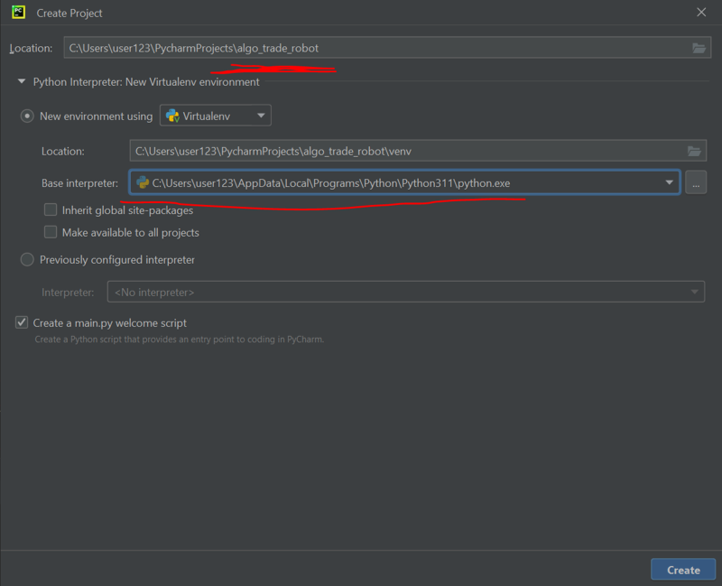
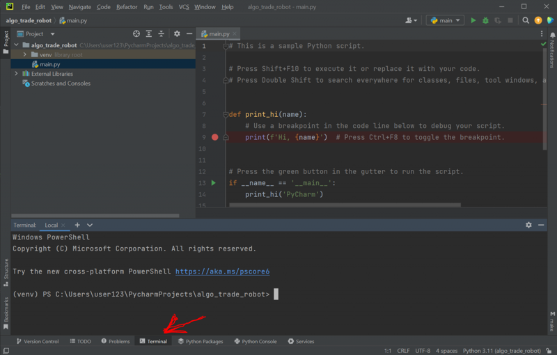
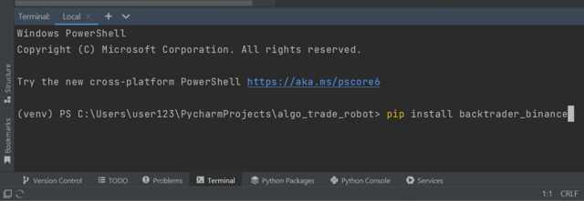
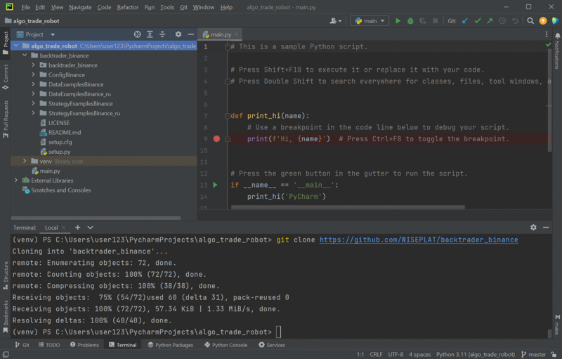
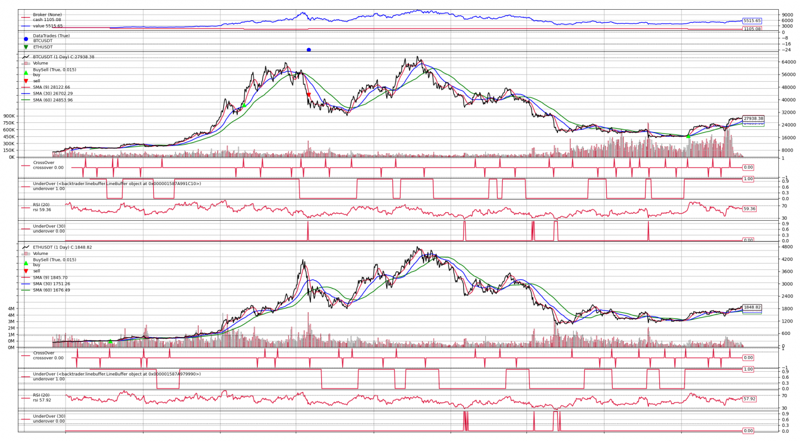
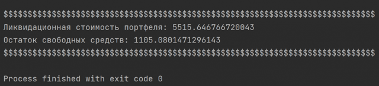

Программирование для меня это хобби и любимое дело. А так я сертифицированный системный архитектор. Поэтому прошу не особо ругать за код :-)
В настоящее время я увлекаюсь написанием торговых роботов.
Постепенно изучаю нейросети для их применения к анализу цен/объемов акций/фьючерсов.
Обычно я писал торговых роботов для работы с Брокерами и делал авто-торговлю Акциями или Фьючерсами, но вдруг возникла мысль.
- А что, если уже готовый код можно применять и на других активах??? Например на крипто активах для Биткоина или Эфира или других?
Уже изучив много библиотек и примеров за долгое время написания своих торговых роботов, решил сделать небольшую библиотеку backtrader_binance для интеграции API Binance и библиотеки тестирования торговых стратегий Backtrader.
Вот с помощью backtrader_binance, сейчас и создадим алго-робота для торговли BTC и ETH.

Создание нового проекта для алго-трейдинга

Открытый терминал проекта
Для установки библиотеки осуществляющей интеграцию Binance API с Backtrader вводим команду
pip install backtrader_binance

Ввод команды установки backtrader_binance в терминале
Теперь необходимо установить библиотеку тестирования торговых стратегий Backtrader
pip install git+https://github.com/WISEPLAT/backtrader.git
P.S. Пожалуйста, используйте Backtrader из моего репозитория (так как вы можете размещать в нем свои коммиты).
И наконец у нас есть некоторые зависимости, которые вам нужно так же установить
pip install python-binance pandas matplotlib
git clone https://github.com/WISEPLAT/backtrader_binance
И теперь наш проект выглядит вот так

Проект торгового робота для Binance
Чтобы было легче разобраться как всё работает, я сделал для вас множество примеров в папках DataExamplesBinance_ru и StrategyExamplesBinance_ru.
Перед запуском примера, необходимо получить свой API ключ и Secret ключ, и прописать их в файле ConfigBinance\Config.py:
# content of ConfigBinance\Config.py
class Config:
BINANCE_API_KEY = "YOUR_API_KEY"
BINANCE_API_SECRET = "YOUR_SECRET_KEY"
Как получить токен Binance API
Теперь можно запускать примеры из папок DataExamplesBinance_ru и StrategyExamplesBinance_ru.
Для создания торгового робота обычно придерживаются некоторой структуры кода, можно сказать шаблона, по которому код работает с торговой стратегией и с данными с рынка по тикеру/тикерам и после отработки выводится некоторый результат.
импорт необходимых_библиотек
класс Индикаторов
класс Стратегии/Торговой системы
# --- основной раздел ---
подключение по API к бирже
задание параметров запуска стратегии
запуск стратегии
получение данных по тикеру/тикерам по API
обработка этих данных стратегией
выставление заявок на покупку/продажу
возврат результатов из стратегии
вывод результатов
В примерах вы найдете несколько вариантов запуска стратегий, а вот примерно стандартная структура кода для торгового робота, файл "07 - Offline Backtest Indicators.py":
import datetime as dt
import backtrader as bt
from backtrader_binance import BinanceStore
from ConfigBinance.Config import Config # Файл конфигурации
# видео по созданию этой стратегии
# RuTube: https://rutube.ru/video/417e306e6b5d6351d74bd9cd4d6af051/
# YouTube: https://youtube.com/live/k82vabGva7s
class UnderOver(bt.Indicator):
lines = ('underover',)
params = dict(data2=20)
plotinfo = dict(plot=True)
def __init__(self):
self.l.underover = self.data < self.p.data2 # данные под data2 == 1
# Торговая система
class RSIStrategy(bt.Strategy):
"""
Демонстрация live стратегии с индикаторами SMA, RSI
"""
params = ( # Параметры торговой системы
('coin_target', ''),
('timeframe', ''),
)
def __init__(self):
"""Инициализация, добавление индикаторов для каждого тикера"""
self.orders = {} # Организовываем заявки в виде справочника, конкретно для этой стратегии один тикер - одна активная заявка
for d in self.datas: # Пробегаемся по всем тикерам
self.orders[d._name] = None # Заявки по тикеру пока нет
# создаем индикаторы для каждого тикера
self.sma1 = {}
self.sma2 = {}
self.sma3 = {}
self.crossover = {}
self.underover_sma = {}
self.rsi = {}
self.underover_rsi = {}
for i in range(len(self.datas)):
ticker = list(self.dnames.keys())[i] # key name is ticker name
self.sma1[ticker] = bt.indicators.SMA(self.datas[i], period=9) # SMA1 indicator
self.sma2[ticker] = bt.indicators.SMA(self.datas[i], period=30) # SMA2 indicator
self.sma3[ticker] = bt.indicators.SMA(self.datas[i], period=60) # SMA3 indicator
# signal 1 - пересечение быстрой SMA снизу вверх медленной SMA
self.crossover[ticker] = bt.ind.CrossOver(self.sma1[ticker], self.sma2[ticker]) # crossover SMA1 and SMA2
# signal 2 - когда SMA3 находится ниже SMA2
self.underover_sma[ticker] = UnderOver(self.sma3[ticker].lines.sma, data2=self.sma2[ticker].lines.sma)
self.rsi[ticker] = bt.indicators.RSI(self.datas[i], period=20) # RSI indicator
# signal 3 - когда RSI находится ниже 30
self.underover_rsi[ticker] = UnderOver(self.rsi[ticker].lines.rsi, data2=30)
def next(self):
"""Приход нового бара тикера"""
for data in self.datas: # Пробегаемся по всем запрошенным барам всех тикеров
ticker = data._name
status = data._state # 0 - Live data, 1 - History data, 2 - None
_interval = self.p.timeframe
if status in [0, 1]:
if status: _state = "False - History data"
else: _state = "True - Live data"
print('{} / {} [{}] - Open: {}, High: {}, Low: {}, Close: {}, Volume: {} - Live: {}'.format(
bt.num2date(data.datetime[0]),
data._name,
_interval, # таймфрейм тикера
data.open[0],
data.high[0],
data.low[0],
data.close[0],
data.volume[0],
_state,
))
print(f'\t - RSI =', self.rsi[ticker][0])
print(f"\t - crossover =", self.crossover[ticker].lines.crossover[0])
coin_target = self.p.coin_target
print(f"\t - Free balance: {self.broker.getcash()} {coin_target}")
# сигналы на вход
signal1 = self.crossover[ticker].lines.crossover[0] # signal 1 - пересечение быстрой SMA снизу вверх медленной SMA
signal2 = self.underover_sma[ticker] # signal 2 - когда SMA3 находится ниже SMA2
# сигналы на выход
signal3 = self.underover_rsi[ticker] # signal 3 - когда RSI находится ниже 30
if not self.getposition(data): # Если позиции нет
if signal1 == 1:
if signal2 == 1:
# buy
free_money = self.broker.getcash()
price = data.close[0] # по цене закрытия
size = (free_money / price) * 0.25 # 25% от доступных средств
print("-"*50)
print(f"\t - buy {ticker} size = {size} at price = {price}")
self.orders[data._name] = self.buy(data=data, exectype=bt.Order.Limit, price=price, size=size)
print(f"\t - Выставлена заявка {self.orders[data._name].p.tradeid} на покупку {data._name}")
print("-" * 50)
else: # Если позиция есть
if signal3 == 1:
# sell
print("-" * 50)
print(f"\t - Продаем по рынку {data._name}...")
self.orders[data._name] = self.close() # Заявка на закрытие позиции по рыночной цене
print("-" * 50)
def notify_order(self, order):
"""Изменение статуса заявки"""
order_data_name = order.data._name # Имя тикера из заявки
print("*"*50)
self.log(f'Заявка номер {order.ref} {order.info["order_number"]} {order.getstatusname()} {"Покупка" if order.isbuy() else "Продажа"} {order_data_name} {order.size} @ {order.price}')
if order.status == bt.Order.Completed: # Если заявка полностью исполнена
if order.isbuy(): # Заявка на покупку
self.log(f'Покупка {order_data_name} Цена: {order.executed.price:.2f}, Объём: {order.executed.value:.2f}, Комиссия: {order.executed.comm:.2f}')
else: # Заявка на продажу
self.log(f'Продажа {order_data_name} Цена: {order.executed.price:.2f}, Объём: {order.executed.value:.2f}, Комиссия: {order.executed.comm:.2f}')
self.orders[order_data_name] = None # Сбрасываем заявку на вход в позицию
print("*" * 50)
def notify_trade(self, trade):
"""Изменение статуса позиции"""
if trade.isclosed: # Если позиция закрыта
self.log(f'Прибыль по закрытой позиции {trade.getdataname()} Общая={trade.pnl:.2f}, Без комиссии={trade.pnlcomm:.2f}')
def log(self, txt, dt=None):
"""Вывод строки с датой на консоль"""
dt = bt.num2date(self.datas[0].datetime[0]) if not dt else dt # Заданная дата или дата текущего бара
print(f'{dt.strftime("%d.%m.%Y %H:%M")}, {txt}') # Выводим дату и время с заданным текстом на консоль
if __name__ == '__main__':
cerebro = bt.Cerebro(quicknotify=True)
cerebro.broker.setcash(2000) # Устанавливаем сколько денег
cerebro.broker.setcommission(commission=0.0015) # Установить комиссию- 0.15% ... разделите на 100, чтобы удалить %
coin_target = 'USDT' # базовый тикер, в котором будут осуществляться расчеты
symbol = 'BTC' + coin_target # тикер, по которому будем получать данные в формате <КодТикераБазовыйТикер>
symbol2 = 'ETH' + coin_target # тикер, по которому будем получать данные в формате <КодТикераБазовыйТикер>
store = BinanceStore(
api_key=Config.BINANCE_API_KEY,
api_secret=Config.BINANCE_API_SECRET,
coin_target=coin_target,
testnet=False) # Хранилище Binance
# # live подключение к Binance - для Offline закомментировать эти две строки
# broker = store.getbroker()
# cerebro.setbroker(broker)
# -----------------------------------------------------------
# Внимание! - Теперь это Offline для тестирования стратегий #
# -----------------------------------------------------------
# # Исторические 1-минутные бары за 10 часов + новые live бары / таймфрейм M1
# timeframe = "M1"
# from_date = dt.datetime.utcnow() - dt.timedelta(minutes=60*10)
# data = store.getdata(timeframe=bt.TimeFrame.Minutes, compression=1, dataname=symbol, start_date=from_date, LiveBars=False) # поставьте здесь True - если нужно получать live бары
# # data2 = store.getdata(timeframe=bt.TimeFrame.Minutes, compression=1, dataname=symbol2, start_date=from_date, LiveBars=False) # поставьте здесь True - если нужно получать live бары
# Исторические D1 бары за 365 дней + новые live бары / таймфрейм D1
timeframe = "D1"
from_date = dt.datetime.utcnow() - dt.timedelta(days=365*3)
data = store.getdata(timeframe=bt.TimeFrame.Days, compression=1, dataname=symbol, start_date=from_date, LiveBars=False) # поставьте здесь True - если нужно получать live бары
data2 = store.getdata(timeframe=bt.TimeFrame.Days, compression=1, dataname=symbol2, start_date=from_date, LiveBars=False) # поставьте здесь True - если нужно получать live бары
cerebro.adddata(data) # Добавляем данные
cerebro.adddata(data2) # Добавляем данные
cerebro.addstrategy(RSIStrategy, coin_target=coin_target, timeframe=timeframe) # Добавляем торговую систему
cerebro.run() # Запуск торговой системы
cerebro.plot() # Рисуем график
print()
print("$"*77)
print(f"Ликвидационная стоимость портфеля: {cerebro.broker.getvalue()}") # Ликвидационная стоимость портфеля
print(f"Остаток свободных средств: {cerebro.broker.getcash()}") # Остаток свободных средств
print("$" * 77)
Посмотрев на код выше, можно легко увидеть, что
import datetime as dt
import backtrader as bt
from backtrader_binance import BinanceStore
from ConfigBinance.Config import Config # Файл конфигурации
class UnderOver(bt.Indicator):
lines = ('underover',)
params = dict(data2=20)
plotinfo = dict(plot=True)
def __init__(self):
self.l.underover = self.data < self.p.data2 # данные под data2 == 1
# Торговая система
class RSIStrategy(bt.Strategy):
"""
Демонстрация live стратегии с индикаторами SMA, RSI
"""
params = ( # Параметры торговой системы
('coin_target', ''),
('timeframe', ''),
)
def __init__(self):
"""Инициализация, добавление индикаторов для каждого тикера"""
self.orders = {} # Организовываем заявки в виде справочника, конкретно для этой стратегии один тикер - одна активная заявка
for d in self.datas: # Пробегаемся по всем тикерам
self.orders[d._name] = None # Заявки по тикеру пока нет
# создаем индикаторы для каждого тикера
self.sma1 = {}
self.sma2 = {}
self.sma3 = {}
self.crossover = {}
self.underover_sma = {}
self.rsi = {}
self.underover_rsi = {}
for i in range(len(self.datas)):
ticker = list(self.dnames.keys())[i] # key name is ticker name
self.sma1[ticker] = bt.indicators.SMA(self.datas[i], period=9) # SMA1 indicator
self.sma2[ticker] = bt.indicators.SMA(self.datas[i], period=30) # SMA2 indicator
self.sma3[ticker] = bt.indicators.SMA(self.datas[i], period=60) # SMA3 indicator
# signal 1 - пересечение быстрой SMA снизу вверх медленной SMA
self.crossover[ticker] = bt.ind.CrossOver(self.sma1[ticker], self.sma2[ticker]) # crossover SMA1 and SMA2
# signal 2 - когда SMA3 находится ниже SMA2
self.underover_sma[ticker] = UnderOver(self.sma3[ticker].lines.sma, data2=self.sma2[ticker].lines.sma)
self.rsi[ticker] = bt.indicators.RSI(self.datas[i], period=20) # RSI indicator
# signal 3 - когда RSI находится ниже 30
self.underover_rsi[ticker] = UnderOver(self.rsi[ticker].lines.rsi, data2=30)
def next(self):
"""Приход нового бара тикера"""
for data in self.datas: # Пробегаемся по всем запрошенным барам всех тикеров
ticker = data._name
status = data._state # 0 - Live data, 1 - History data, 2 - None
_interval = self.p.timeframe
if status in [0, 1]:
if status: _state = "False - History data"
else: _state = "True - Live data"
print('{} / {} [{}] - Open: {}, High: {}, Low: {}, Close: {}, Volume: {} - Live: {}'.format(
bt.num2date(data.datetime[0]),
data._name,
_interval, # таймфрейм тикера
data.open[0],
data.high[0],
data.low[0],
data.close[0],
data.volume[0],
_state,
))
print(f'\t - RSI =', self.rsi[ticker][0])
print(f"\t - crossover =", self.crossover[ticker].lines.crossover[0])
coin_target = self.p.coin_target
print(f"\t - Free balance: {self.broker.getcash()} {coin_target}")
# сигналы на вход
signal1 = self.crossover[ticker].lines.crossover[0] # signal 1 - пересечение быстрой SMA снизу вверх медленной SMA
signal2 = self.underover_sma[ticker] # signal 2 - когда SMA3 находится ниже SMA2
# сигналы на выход
signal3 = self.underover_rsi[ticker] # signal 3 - когда RSI находится ниже 30
if not self.getposition(data): # Если позиции нет
if signal1 == 1:
if signal2 == 1:
# buy
free_money = self.broker.getcash()
price = data.close[0] # по цене закрытия
size = (free_money / price) * 0.25 # 25% от доступных средств
print("-"*50)
print(f"\t - buy {ticker} size = {size} at price = {price}")
self.orders[data._name] = self.buy(data=data, exectype=bt.Order.Limit, price=price, size=size)
print(f"\t - Выставлена заявка {self.orders[data._name].p.tradeid} на покупку {data._name}")
print("-" * 50)
else: # Если позиция есть
if signal3 == 1:
# sell
print("-" * 50)
print(f"\t - Продаем по рынку {data._name}...")
self.orders[data._name] = self.close() # Заявка на закрытие позиции по рыночной цене
print("-" * 50)
def notify_order(self, order):
"""Изменение статуса заявки"""
order_data_name = order.data._name # Имя тикера из заявки
print("*"*50)
self.log(f'Заявка номер {order.ref} {order.info["order_number"]} {order.getstatusname()} {"Покупка" if order.isbuy() else "Продажа"} {order_data_name} {order.size} @ {order.price}')
if order.status == bt.Order.Completed: # Если заявка полностью исполнена
if order.isbuy(): # Заявка на покупку
self.log(f'Покупка {order_data_name} Цена: {order.executed.price:.2f}, Объём: {order.executed.value:.2f}, Комиссия: {order.executed.comm:.2f}')
else: # Заявка на продажу
self.log(f'Продажа {order_data_name} Цена: {order.executed.price:.2f}, Объём: {order.executed.value:.2f}, Комиссия: {order.executed.comm:.2f}')
self.orders[order_data_name] = None # Сбрасываем заявку на вход в позицию
print("*" * 50)
def notify_trade(self, trade):
"""Изменение статуса позиции"""
if trade.isclosed: # Если позиция закрыта
self.log(f'Прибыль по закрытой позиции {trade.getdataname()} Общая={trade.pnl:.2f}, Без комиссии={trade.pnlcomm:.2f}')
def log(self, txt, dt=None):
"""Вывод строки с датой на консоль"""
dt = bt.num2date(self.datas[0].datetime[0]) if not dt else dt # Заданная дата или дата текущего бара
print(f'{dt.strftime("%d.%m.%Y %H:%M")}, {txt}') # Выводим дату и время с заданным текстом на консоль
Класс торговой системы имеет несколько основных методов:
Вы можете по желанию расширять/добавлять новые методы/функционал.
Поэтому я записал специально для вас видео по созданию этой стратегии по шагам:
Если возникают какие мысли по созданию, пишите посмотрим.
Параметры стратегии не были оптимизированы, поэтому она может дать более лучший результат.

Покупки/продажи на D1

Результат работы торговой стратегии
Т.е. 2000 USDT превратилось в 5515 USDT => прирост 175%
Как мне видится, получилось довольно интересно :-) И жду ваших коммитов / фиксов / идей!
P.S. Код библиотеки частично написан сообществом, существенное изменение которое я внёс - это возможность торговать портфелем тикеров - не просто одним, а множеством тикеров. Исправил некие ошибки, многократно протестировал и добавил много хороших примеров для создания своих полноценных собственных стратегий. Конечно, еще есть моменты, над чем можно будет поработать.